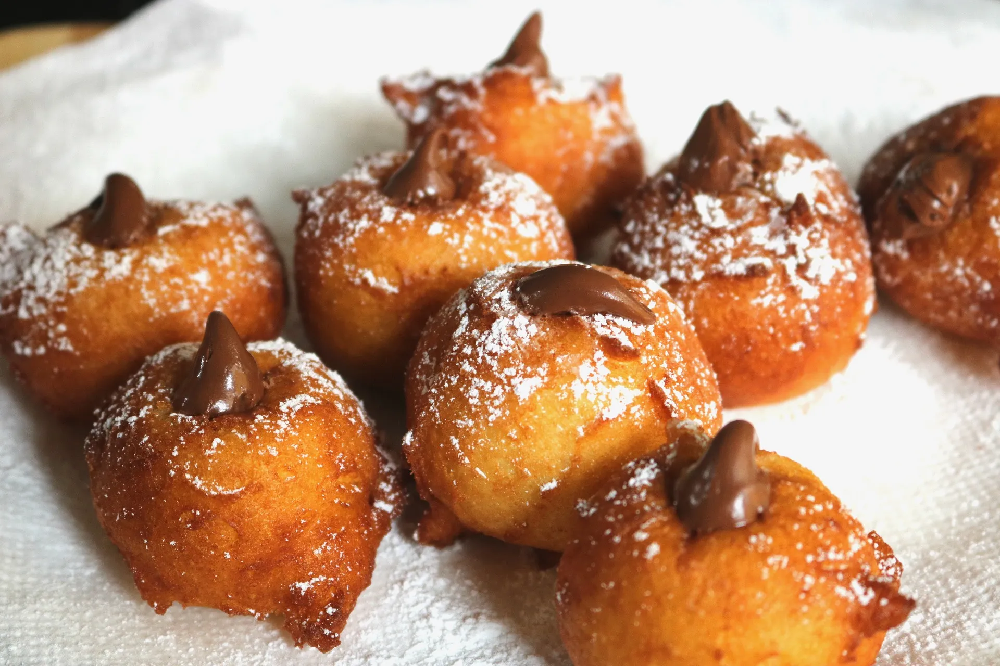

Zeppoles with Hazelnut Chocolate Filling

Description
Not only are these fried heaven, but they are ridiculously easy to make. You probably have most of the
ingredients already in your pantry. You can enjoy them at any time of day. Because anytime is zeppole time! You
can have them in the morning with an espresso for breakfast or after lunch or dinner to satisfy your sweet
tooth. And I promise, it is totally acceptable to have them for a midnight snack if the mood strikes! Just be
careful handling hot oil if you are only half awake. Safety first.
Ingredients
- 2 eggs
- 1 cup all purpose flour
- 2 1/4 teaspoons baking powder
- 1/4 cup granulated sugar
- 1 cup of whole milk ricotta cheese
- 1 teaspoon vanilla extract
- Dash of salt
- 1/2 cup hazelnut chocolate spread
- Confectioners sugar for dusting
- Vegetable or canola oil for frying
Instructions
- Put oil in a deep fry pan. Begin to heat oil.
Beat two eggs in a large mixing bowl until foamy.
- On low speed, add the flour, sugar, baking powder and dash of salt.
- Immediately add the ricotta cheese and vanila.
- Mix on slow speed until it is all combined. Do not overmix. The batter will be sticky and thick.
- When the oil reaches 375 degrees, you are ready to fry your zepple.
- Use a small ice cream scoop (or a melon baller). Spray with a cooking sray to prevent the batter from
sticking to it. Scoop about a tablespoon into the hot oil. You may do several at one time, however, do not
overcrowd the pan. The zeppoles should not touch. About 4-5 at a time.
- Use a wooden spoon to turn the zeppoles a few times. It will take about 3-4 minutes until they are cooked.
They will be a golden brwn.
- Dust the tops of the zeppoles with confectioners sugar.
- Allow zeppoles to cool for a few minutes.
- Add the chocolate hazelnut cream to a pastry bag with a small pastry tip.
- Using a paring knife, make an X on the top of each zeppole. The knife should go down to the bottom of the
zeppole but should not cut through it.
- Take the pastry bag and stuff each zeppole with just enough cream so that it shows on the top.
- Enjoy these babies while they are ot!
Home